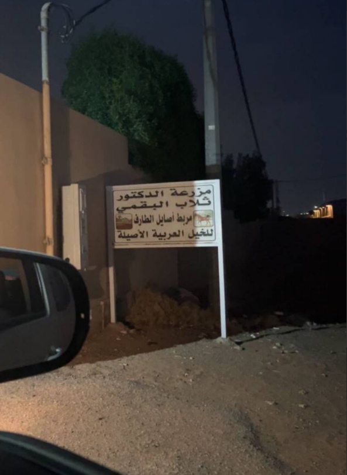

مزرعــة الدكتــور ثــلاب البقــمي هي مزرعــة تهتم بالإنتــاج الزراعــي والعنايــة بالمحاصيــل،
وتحرص على تقديــم منتجات مختــارة بجــودة تعكس الاهتمام بالأرض وما تنتجــه.
نؤمــن أن جــودة المنتج تبدأ من العنايــة بالأرض، وأن كل محصــول يحمل قصــة تبــدأ من المزرعــة
وتنتهــي على مائدتــكم.

بدأت قصــة مزرعــة الدكتور ثــلاب البقمي عــام 1433هـ الموافق 2011م، من شغــف بالأرض واهتمام بالزراعــة والعنايــة بالمحاصيــل.
ومنذ البدايــة، حرصت المزرعــة على الاهتمام بجــودة الإنتاج والعنايــة بكل مرحلــة، من الأرض وحتى وصول المحصــول إلى المائــدة.
نُقدّم مجموعة من منتجات المزرعــة التي تعكس جـودة العنايـة بـالأرض والمحاصـيل.
تـمور مختـارة بعنـاية من إنتـاج الـمزرعة، تتمـيز بجودتها ومــذاقها الأصيـل.
رطب طـازج يتم اختيـاره بعنايـة في مـوسمه ليصـل بـجودة وطـعم ممـيز.
مـجموعـة من منتجـات الـنخيل التي تـعكس جـودة الإنتـاج والعنايـة بالـمزرعة.
محـاصيـل زراعيـة يتم الاهتمام بهـا منذ بداية الـزراعة وحتـى مرحلـة الـحصاد.
تبدأ جــودة التمــر من العنايــة بالنخيــل، وتمر بعــدة مراحــل حتى يصل المنتج إليكــم بأفضــل جــودة ومــذاق.
تبدأ الرحلــة بالعنايــة بالنخيــل ومتابعــة نمــوه لضمان إنتــاج ثمــار ذات جــودة عاليــة.
تتم متابعــة الثمــار خلال مراحــل نمــوها والعنايــة بها حتى تصل إلى مرحلــة النضــج المناسبة.
يتم جمــع التمــور في الوقت المناسب مع الحرص على المحافظــة على جــودة الثمــار وسلامتهــا.
يتم فــرز التمــور واختيــار أفضــل الثمــار بعنايــة حسب الجــودة والحجــم والمظهــر.
تُجهــز التمــور بعنايــة لتصل إلى المستهلك بشكل يحافظ على جودتهــا ومذاقهــا الأصيــل.
نفخــر بآراء عملائنــا وتجاربهم مع منتجات المزرعــة.
“تمر جدًا رائع خصوصًا السكري واشكر خدمة العملاء اريج على حسن التعامل شاكرين لكم تعاونكم”
إبتهاج“تمر فاخر ولذيذ، واضح فيه الاهتمام بالجودة طعم مميز وجودة تستحق المدح واشكر خدمة العملاء اريج راقيه وسريعه وبكل تأكيد تجربة تستحق التكرار🌴🤎”
للو“بالبداية ما اعرف وش اتكلم عنه عن جودة التمر ولا التواصل مع الاخ المسؤول عن التمر ولا المهندسة اريج واهتمامها في خدمتنا وفي الاخير التمر جودة ونظافة شي جميل ومنتج بلدي رائع نتمنى في السنوات القادمة يتكسح السوق”
عميلة معكم من البداية🤍“من أجمل أنواع التمــر التي جربتها، والجــودة تستحق التجربة.”
سارة“تمــر بجــودة ممتازة وطعــم أصيل، والتغليف كان مرتبًا وجميلًا.”
أحمد“جــودة التمــر واضحة من أول تجربــة، والطعم مميز جدًا.”
نورة“تجربــة جميلة والتمــر وصل بجودة ممتازة، وبإذن الله لن تكون آخر مرة.”
محمداختـر نـوع التـمر والكـمية المنـاسبـة لـك، وسنتواصــل معـك لتـأكيـد الطلـب وتفـاصيل الاستـلام.